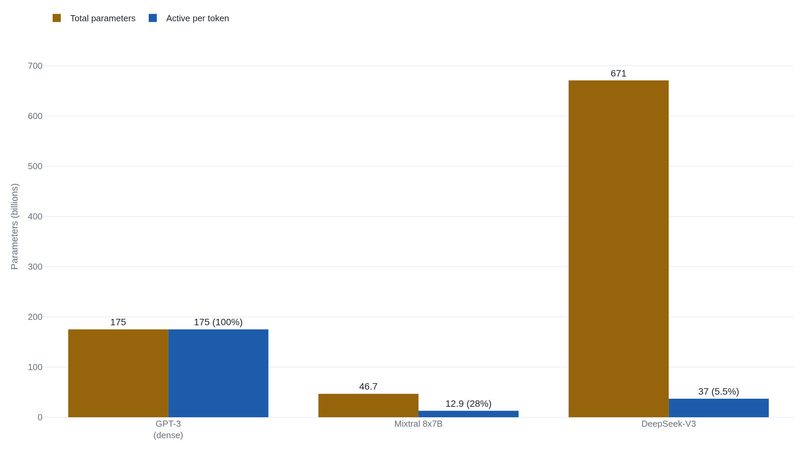

DeepSeek-V3 lists 671 billion parameters and runs 37 billion per token
The count is an exact tally of a model's frozen weights, and a mixture-of-experts model can advertise one far larger than the slice that fires on any given token.
Why this matters
You have met this number. A model is “175 billion parameters,” or “a 70B,” or, lately, “671B,” and the figure stands in for how big and how good the thing is. The number is real and easy to check. What it counts, and what it quietly stops counting once a model sends each word to a fraction of itself, is what almost no one who quotes it can say. By the end of this lesson you will know what a parameter count actually tallies, and why a bigger one has not meant a better model since at least 2022. You will also know how to read the two numbers a mixture-of-experts model really has, without falling for the multiplication that fools people.
- 01
- Training compute: the other “how big is this model” number, the one regulators actually write into law.
- 02
- Chinchilla: the result that broke “more parameters is better” even for dense models.
What the number literally counts
A parameter is one number the model learned. Training nudges each one up or down until the model predicts text well; after training every parameter is frozen, and running the model only multiplies these fixed numbers into the values passing through it and sums the results. So counting parameters is not an estimate. The total is set by the architecture, and it is almost all weight matrices: the attention blocks and the feed-forward blocks inside each layer, plus the embedding table that turns each token into a vector. Add layers, or make each layer wider, and the count grows, roughly as the number of layers times the width squared.
GPT-3 is the anchor most readers already carry: 175 billion parameters, which its authors described as ten times the size of any previous dense model, meaning one that puts all of its parameters to work on every token.1 Every one of GPT-3's 175 billion is multiplied into every token it reads or writes. That property is the one to hold onto. It is true of GPT-3, and false of the models now posting the biggest numbers.
The count never promised quality
For a while the count was a fair proxy. Inside one model family trained the same way, from GPT-2 to GPT-3, adding parameters did reliably buy capability, and people learned to read a bigger number as a better model. Two things broke that reading.
The first was Chinchilla. In 2022 a DeepMind team trained a 70-billion-parameter model on four times more data than a 280-billion-parameter model built on the same compute budget. The smaller model won across the board, beating the 280B Gopher, GPT-3, and models larger still.2 The finding was not that parameters had stopped mattering. It was that a parameter count and a training budget have to grow together, so at a fixed budget a larger model trained on less data is the worse trade. The desk's training-compute lesson covers how that budget is measured, and the-evidence's Chinchilla lesson covers the result in full. The point to carry here is narrower: the count, on its own, had stopped predicting quality across models that spent their compute differently.
Routing sends each token to a few experts
The second break was architectural. A mixture-of-experts model splits part of each layer into many parallel sub-networks, called experts, and adds a small router that, for each token, picks a few experts to run and skips the rest. The idea is old. A 2017 Google Brain paper showed that a gating network could select a sparse handful of experts per example out of thousands, raising a model's capacity by more than a thousandfold while adding little computation per example.3 The 2021 Switch Transformer pushed the routing to a single expert per token and stated the consequence plainly: parameter counts can grow to outrageous sizes while the computation spent on each token stays about constant.4
That sentence is where the parameter count and the work parted. A dense model runs all of its parameters on every token. A sparse mixture-of-experts model stores a large pile of parameters and runs a small, changing subset of them on each one.
Why 8 times 7 is not 56
The counting is where a mixture-of-experts model misleads, because the obvious way to size one is wrong. Take Mixtral 8x7B, released by Mistral AI at the end of 2023. The name reads like eight seven-billion-parameter models joined together, so the tempting total is 8 times 7: 56 billion. The real total is 46.7 billion.5
The difference is not rounding. Only the feed-forward block of each layer is copied into eight experts. The attention layers, the embedding table, and the normalization weights exist in a single shared copy, counted once no matter which expert runs.6 Eight standalone 7B models would duplicate all of that eight times over. Mixtral duplicates only the feed-forward part, so the honest total lands well under 56 billion.
| Reading of Mixtral 8x7B | Parameters (B) |
|---|---|
| Eight standalone 7B models, 8 × 7 | 56.0 |
| Actual total, attention and embeddings shared | 46.7 |
| Active per token, 2 of 8 experts fire | 12.9 |
The shared parts also fix the active count. For each token the router picks 2 of the 8 experts, so the parameters that actually compute are the shared attention and embeddings plus two feed-forward experts, not two whole 7B models. Mistral gives the figure: 12.9 billion active per token, and not 14 billion, for the same reason 56 was too high.5 Mixtral's own paper rounds the pair to 47 billion and 13 billion, and the Hugging Face model card lists the size, flatly, as “47B params.”78
The total is still the memory bill
Set a mixture-of-experts total beside a dense model's and a fair-looking comparison forms. DeepSeek-V3's 671 billion parameters next to GPT-3's 175 billion suggests a model near four times the size, four times the cost, and presumably stronger. Each of those three inferences fails in its own way.
Size, in the sense of memory, is the one that holds. Every parameter has to sit in the accelerator's memory before a token arrives, because the router may send the next token to any expert. DeepSeek-V3 holds all 671 billion parameters in memory to compute with 37 billion of them per token, about one part in eighteen; Mixtral holds all 46.7 billion to run 12.9.95 On memory the total is the honest number, and the big model really is the big one.
Cost per token is the inference that flips. Because only 37 billion parameters compute on a DeepSeek-V3 token, its arithmetic per token runs below a dense 175-billion model's, even though its total towers over it. Mistral makes the same point for Mixtral: 12.9 billion active means it “processes input and generates output at the same speed and for the same cost as a 12.9 billion model.”5 Nathan Lambert, writing on Mixtral, put the trade plainly: a sparse model spends more memory to buy cheaper, faster inference.6

Capability is the third inference, and the totals settle none of it. Chinchilla already showed a smaller model beating a larger one at equal compute, and sparse routing only widens the space between the advertised number and anything you would want to conclude from it. What the count counts exactly is the size of the stored weight stack. That size sets the memory bill. It does not set the speed, and it never set the skill.
The takeaway
A parameter count is the most exact number in public AI and the most misread. It tallies the model's frozen weights, the ones in the attention and feed-forward blocks and the embedding table, and it tallies them exactly. What it does not tell you is how much of that stack runs on any given token, and on a mixture-of-experts model the answer is a small, fixed slice. So read the pair, not the headline. The total is the memory the model needs. The active count is the speed and compute each token costs. Neither, since Chinchilla, tells you whether the model is any good. The next time you meet “N billion parameters,” ask two things. The first is whether all N of them run, or only a few billion do. The second is what the person quoting the number wants you to conclude from it.
- 01
- Nathan Lambert, “Mixtral” (Interconnects): a working researcher walking through why 8×7 is not 56, and the memory-for-speed trade a sparse model makes.
- 02
- Switch Transformers (Fedus et al., 2021): the design that scales parameters to the trillions while holding the compute per token roughly flat.
Sources
- Brown et al. · Language Models are Few-Shot Learners (GPT-3)
- Hoffmann et al. · Training Compute-Optimal Large Language Models (Chinchilla)
- Shazeer et al. · Outrageously Large Neural Networks: The Sparsely-Gated Mixture-of-Experts Layer
- Fedus et al. · Switch Transformers: Scaling to Trillion Parameter Models with Simple and Efficient Sparsity
- Mistral AI · Mixtral of Experts (announcement)
- Nathan Lambert (Interconnects) · Mixtral, mixture of experts explained
- Jiang et al. · Mixtral of Experts
- Mistral AI · Mixtral-8x7B-v0.1 model card (Hugging Face)
- DeepSeek-AI · DeepSeek-V3 Technical Report